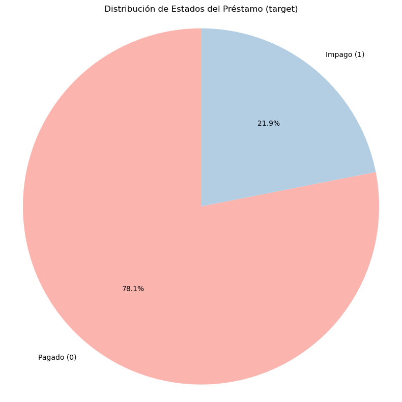
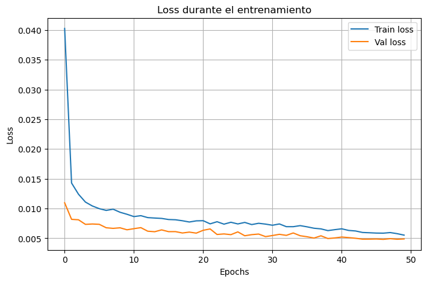
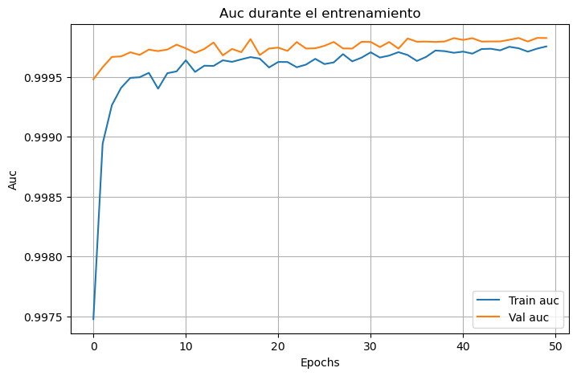
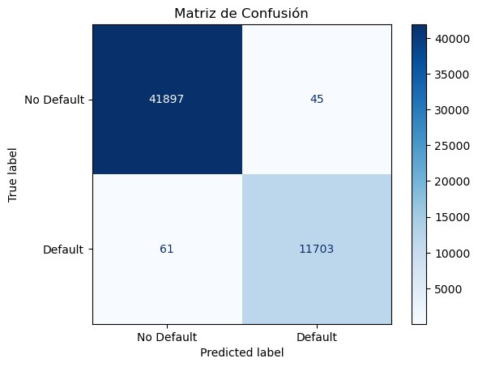
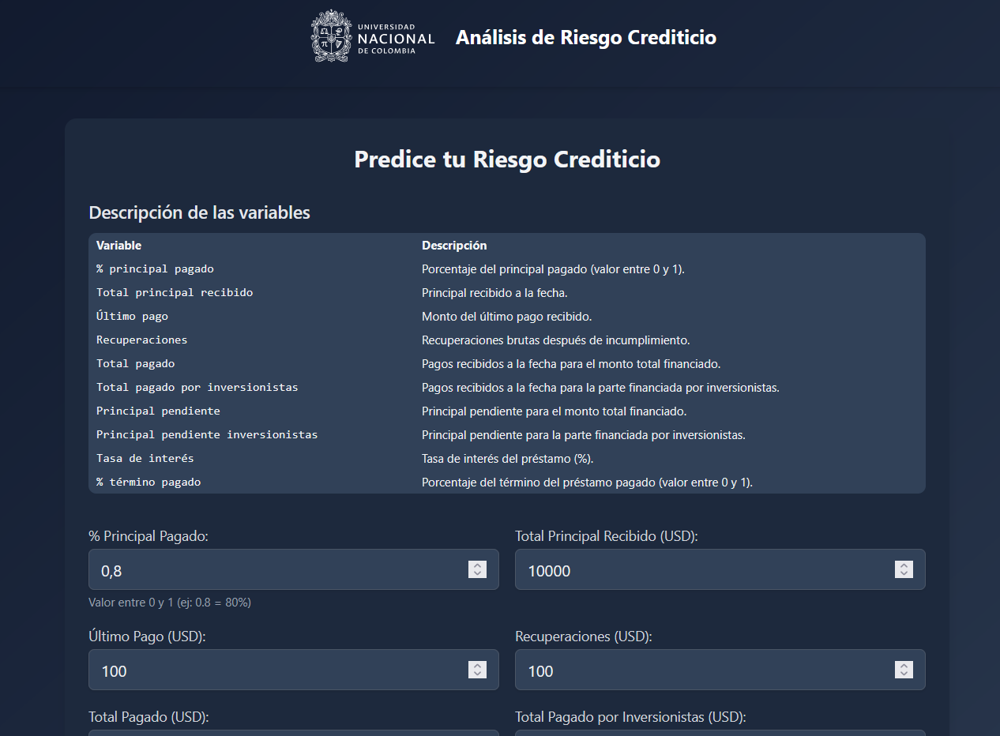
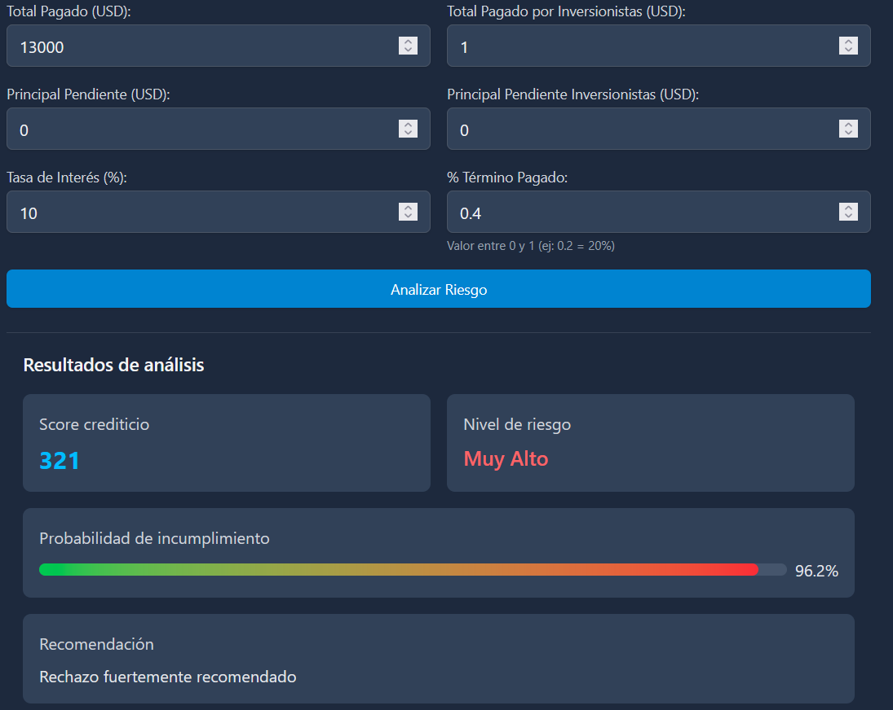

1 1. Introducción
El acceso al crédito es un pilar fundamental en la inclusión financiera y el crecimiento económico de las sociedades modernas. Sin embargo, otorgar crédito implica inherentemente un riesgo para las instituciones financieras: la posibilidad de que un prestatario no cumpla con sus obligaciones. En este contexto, la capacidad para predecir el incumplimiento de pagos se convierte en un componente esencial de una gestión crediticia efectiva.
El presente trabajo aborda el desarrollo de un modelo de predicción de la probabilidad de incumplimiento en créditos individuales utilizando redes neuronales artificiales aplicadas a datos tabulares. Se emplea como caso de estudio el conjunto de datos denominado Credit Risk Dataset, disponible en la plataforma Kaggle. Este dataset incluye una amplia variedad de características sociodemográficas, financieras y crediticias que permiten modelar el comportamiento de pago de los clientes.
Más allá del modelo predictivo, el trabajo propone una representación en forma de scorecard —una herramienta ampliamente utilizada en la industria financiera para comunicar riesgos de manera simple y comprensible—, así como una aplicación web interactiva que permite a los usuarios explorar su nivel de riesgo frente al resto de la población analizada. Esta integración entre inteligencia artificial, visualización y accesibilidad promueve una comprensión activa del riesgo crediticio tanto para entidades como para individuos.
2 2. Evaluación y Gestión del Riesgo de Crédito
La evaluación del riesgo de crédito busca estimar la probabilidad de que un solicitante de crédito incumpla sus obligaciones contractuales, lo cual tiene implicaciones directas en la rentabilidad, sostenibilidad y solvencia de las instituciones financieras. Tradicionalmente, esta evaluación se ha basado en análisis estadísticos y expertos humanos, pero los avances recientes en ciencia de datos permiten la implementación de modelos más complejos y adaptativos, como las redes neuronales.
La gestión del riesgo crediticio abarca no solo la predicción del incumplimiento, sino también su monitoreo continuo, la segmentación de clientes, la definición de políticas de originación, y el cálculo de provisiones y capital regulatorio. En este sentido, los modelos predictivos contribuyen a:
- Reducir la morosidad mediante decisiones informadas de otorgamiento.
- Asignar precios al riesgo de forma diferenciada.
- Optimizar el portafolio de cartera balanceando riesgo y retorno.
En este trabajo se sigue una lógica propia del scoring de crédito, enfocada en estimar la probabilidad de ser “malo” (default), una perspectiva crítica para prevenir pérdidas esperadas. La transformación de la variable loan_status en una variable binaria facilita este enfoque, permitiendo excluir casos inciertos y concentrar el análisis en observaciones con historial conocido.
La metodología propuesta tiene un enfoque práctico, que puede ser fácilmente adaptado por cooperativas, fondos de empleados y fintechs interesadas en mejorar sus esquemas de evaluación crediticia mediante herramientas basadas en aprendizaje automático.
3 3. Delimitación del Problema y Metodología
3.1 Delimitación del Problema
El presente trabajo se enfoca en la predicción del riesgo de incumplimiento crediticio individual a partir de información sociodemográfica, financiera y crediticia contenida en el Credit Risk Dataset. Se define como problema principal la estimación de la probabilidad de que un cliente sea “malo”, es decir, que no pague su crédito de manera completa o que presente morosidades graves.
Para ello, se construye una variable objetivo binaria en la que:
- 1 representa un cliente que incumple (por ejemplo, estados como Charged Off, Default, o Late 31-120 days),
- 0 representa un cliente que cumple (por ejemplo, Fully Paid o equivalentes),
- Casos con estados como Current, Issued, In Grace Period, o con información ambigua son excluidos del entrenamiento.
La tarea se delimita como un problema de clasificación supervisada binaria, donde el objetivo es modelar la probabilidad condicional de ser un mal pagador dadas sus características observadas. No se aborda en este trabajo la estimación de pérdida esperada ni la severidad del incumplimiento, sino únicamente su ocurrencia.
Además, el trabajo se centra en el desarrollo y análisis de modelos basados en redes neuronales artificiales aplicadas a datos tabulares. Si bien se incluye un modelo de referencia más simple (como regresión logística), el foco principal es la exploración y optimización de arquitecturas de redes para mejorar el poder predictivo.
3.2 Metodología
La metodología del trabajo consta de las siguientes etapas:
- Preparación del conjunto de datos
- Carga del dataset y exploración preliminar.
- Transformación de la variable loan_status a formato binario.
- Tratamiento de valores faltantes y codificación de variables categóricas.
- Normalización de variables numéricas según requerimientos de la red neuronal.
- Análisis exploratorio
- Descripción estadística de variables clave.
- Visualización de relaciones entre variables y la clase objetivo.
- Generación de hipótesis iniciales sobre factores de riesgo.
- Construcción y validación de modelos
- Implementación de un modelo de referencia (regresión logística o árbol).
- Diseño y entrenamiento de una red neuronal feedforward (MLP).
- Optimización de hiperparámetros (número de capas, neuronas, función de activación, regularización, tasa de aprendizaje).
- Evaluación del desempeño mediante métricas como AUC, precisión, recall y matriz de confusión sobre conjuntos de validación y prueba.
- Interpretabilidad y scorecard
- Aproximación de la red neuronal mediante métodos interpretables.
- Conversión de salidas en una escala de score (por ejemplo, 300–850).
- Visualización del score en comparación con la población general.
- Despliegue web
- Desarrollo de una aplicación interactiva que permite ingresar características individuales y visualizar el score.
- Inclusión de visualizaciones comparativas y mensajes interpretativos.
- Enlace a reporte técnico y video promocional.
- Evaluación y documentación
- Análisis de resultados y aprendizajes clave.
- Discusión sobre aplicabilidad práctica del modelo.
- Redacción del reporte técnico con normas APA y presentación audiovisual.
4 Preparación del conjunto de datos
4.1 Construcción de la Variable Objetivo
La primera parada en nuestro viaje de modelado predictivo es la definición precisa de la variable que queremos predecir. Partimos cargando el archivo loan.csv en un DataFrame de pandas, donde la columna loan_status funge como el corazón del análisis: indica el estado final de cada préstamo.
Sin embargo, esta columna no está lista para su uso directo. Contiene múltiples etiquetas en texto que describen distintos escenarios crediticios, desde préstamos totalmente pagados hasta aquellos en mora o incumplimiento. Para convertir este problema en una tarea de clasificación binaria clara, realizamos una transformación crucial: los estados favorables se codifican como 0 (buen pagador), mientras que los desfavorables se codifican como 1 (incumplimiento). Aquellos casos en los que el comportamiento del prestatario no es concluyente se excluyen del análisis para evitar ambigüedades.
Este paso no solo depura el conjunto de datos, sino que también garantiza que la variable objetivo sea estrictamente binaria y esté representada en un formato numérico, condición indispensable para que los algoritmos de aprendizaje automático funcionen correctamente.
df = pd.read_csv(csv_path)
logger.info(f"Datos cargados: {df.shape}")
# Crear variable target
if 'loan_status' not in df.columns:
raise ValueError("Columna 'loan_status' no encontrada")
df['target'] = df['loan_status'].map(self.STATUS_MAP)
df = df[df['target'].notna()].copy()
logger.info(f"Datos después de filtrar: {df.shape}")
logger.info(f"Distribución de target: {df['target'].value_counts()}")
# Preprocesar datos
df_clean = self._clean_data(df)
# Asegurar que todas las features necesarias estén presentes
for col in self.TOP_FEATURES:
if col not in df_clean.columns:
df_clean[col] = 0
X = df_clean[self.TOP_FEATURES].astype('float32')
y = df['target'].values.astype('float32') # Convertir a numpy array
# Escalamiento
self.scaler = preprocessing.StandardScaler()
X_scaled = self.scaler.fit_transform(X)
# Dividir datos
X_train, X_test, y_train, y_test = train_test_split(
X_scaled, y,
test_size=self.config.test_size,
stratify=y,
random_state=self.config.random_state
)4.2 Filtrando el Ruido: Una Poda Estratégica del Bosque de Variables
Antes de que cualquier modelo pueda brillar, necesita una base limpia, clara y sin distracciones. Imagínalo como afilar herramientas antes de tallar una escultura: quitar lo innecesario es tan importante como lo que se conserva. Así que emprendimos una limpieza del conjunto de datos, eliminando columnas que, aunque vistosas, no aportaban valor real para predecir el riesgo de incumplimiento.
Columnas fantasma: demasiados datos faltantes Algunas variables parecían estar allí solo de adorno. Con más del 70% de sus valores perdidos, simplemente no tenían sustancia. Solo agregaban confusión. Eliminarlas nos permitió concentrarnos en datos sólidos, confiables y útiles para el modelo.
Textos bonitos, pero poco útiles Variables como nombres, títulos, códigos postales y URLs suenan interesantes… pero para una red neuronal, son solo ruido. Son descripciones libres o identificadores únicos que no tienen patrones útiles para aprender. Preferimos decirles adiós y evitar que el modelo trate de encontrar señales en el caos.
Prediciendo el futuro con datos del futuro (¡prohibido!) Algunas columnas contenían información sobre pagos, moras, recuperaciones… ¡que ocurren después de otorgar el préstamo! Incluirlas sería como hacer trampa en una adivinanza sabiendo ya la respuesta. Para evitar el temido data leakage, se descartaron completamente. Nuestro modelo solo ve lo que estaría disponible antes de tomar la decisión crediticia.
Variables con muy poca variabilidad no ayudan a diferenciar entre buenos y malos pagadores. Si todo el mundo tiene el mismo valor, el modelo no puede aprender nada nuevo de ellas. Por eso, también se fueron.
Datos que el usuario no conoce. Hicimos una última depuración desde el punto de vista práctico. Si estamos construyendo un modelo que se integre a una página web para predecir riesgo de forma intuitiva, no podemos pedirle al usuario cosas que no sabría sin un reporte de crédito detallado. ¿Sabes cuál es tu revol_util o tu tot_cur_bal? Por eso, todas esas variables derivadas de sistemas internos o de burós crediticios fueron descartadas para garantizar una experiencia realista, funcional y centrada en el usuario.
4.3 Codificación Inteligente y Selección Estratégica de Variables
Construir un modelo predictivo no es solo cuestión de lanzar datos al algoritmo. Es como armar un equipo: hay que elegir bien a los jugadores y asegurarse de que hablen el mismo idioma. En esta etapa, transformamos variables clave y seleccionamos aquellas que realmente pueden marcar la diferencia al anticipar el incumplimiento de un préstamo.
Codificación rápida: pequeñas mejoras, gran impacto Algunas variables necesitan un pequeño ajuste para hablar el lenguaje del modelo:
verification_status ¿Los ingresos del solicitante fueron verificados? Esta pregunta sencilla puede decir mucho. Por eso la codificamos de forma binaria.
home_ownership ¿El usuario arrienda, es dueño o tiene hipoteca? Estas categorías sí aportan información. Sin embargo, eliminamos los valores NONE y ANY por ser escasos y ambiguos, evitando introducir ruido innecesario.
Variables que entran al juego: posibles predictores Estas variables fueron seleccionadas por su relevancia, interpretabilidad y disponibilidad anticipada al momento de la solicitud:
loan_amnt: El monto solicitado por el prestatario. Una cifra clave para entender la magnitud del riesgo.
annual_inc: Ingreso anual declarado. Un indicador directo de la capacidad de pago.
emp_length: Años en el empleo actual. La estabilidad laboral influye en la solvencia.
verification_status: Como se explicó antes, es una señal de confianza sobre los ingresos.
home_ownership: Estado de vivienda que puede estar relacionado con el nivel de estabilidad financiera.
purpose: La razón por la cual se solicita el préstamo (educación, consolidación de deuda, auto, etc.). Aunque compleja de modelar, puede contener patrones valiosos que vale la pena explorar.
Codificación binaria: traduciendo categorías al lenguaje de las máquinas.Para que las variables categóricas se integren al modelo, aplicamos codificación binaria, que transforma cada categoría en su propia columna booleana.
5 Analisis Descriptivo e Hipotesis
Antes de construir modelos y lanzar predicciones, es esencial conocer el terreno. El análisis del riesgo crediticio no es solo una cuestión de números: es una radiografía del comportamiento financiero. Aquí exploramos los datos con lupa para descubrir patrones ocultos y validar intuiciones sobre qué variables realmente influyen en el incumplimiento de un préstamo.
5.1 Variable Objetivo: loan_status
El eje central de este análisis es el estado del préstamo:
0 = El préstamo fue pagado completamente
1 = El préstamo fue impagado, en mora o castigado
Esta codificación binaria permite estructurar el problema como una tarea de clasificación y evaluar los factores que diferencian a quienes cumplen frente a quienes no.
6 Análisis de las variables predictoras
La variable target es de tipo categórica binaria y representa el estado del préstamo: 0 para los préstamos pagados y 1 para los impagos. Es la variable objetivo del análisis y sirve como base para entrenar modelos de clasificación supervisada. Analizar su distribución mediante un gráfico de pastel permite identificar posibles desbalances entre clases, lo cual es crucial, ya que un predominio de préstamos pagados podría sesgar el modelo hacia la clase mayoritaria. En este caso, el 78.1% de los registros corresponde a préstamos pagados y el 21.9% a impagos, lo que confirma un desbalance moderado. Además, esta variable define el concepto de incumplimiento sobre el cual se construyen tanto las predicciones como la lógica de score crediticio.

El análisis de las variables predictoras permite comprender los factores que influyen en el comportamiento de pago de los solicitantes de crédito. Una de las variables más relevantes es la tasa de interés (int_rate), ya que refleja el nivel de riesgo que la entidad financiera asigna al prestatario. En general, los créditos con tasas más altas están asociados a perfiles de mayor riesgo. Comparar esta variable entre préstamos pagados e impagos permite validar si esta relación se materializa en los datos, reforzando su utilidad como variable explicativa en el modelo.
Otra variable clave es el índice de endeudamiento (dti, Debt-to-Income Ratio), que indica qué proporción de los ingresos del solicitante está comprometida en el pago de otras deudas. Altos niveles de DTI sugieren una menor capacidad de pago, lo que naturalmente incrementa el riesgo de incumplimiento. Observar la distribución de esta variable según el estado del préstamo permite identificar si los impagos se concentran en prestatarios con mayor carga financiera.
Finalmente, la variable grade representa una clasificación de riesgo asignada internamente por la entidad, y se considera de tipo categórica ordinal, yendo de A (mejor calificación) a G (peor). Evaluar la proporción de impagos por cada nivel permite verificar si esta evaluación interna está alineada con el comportamiento real. Una tendencia ascendente en los incumplimientos a medida que se desciende en el grado de crédito sería una fuerte evidencia de que esta segmentación es efectiva como herramienta de evaluación previa.
Modelado Predictivo Para la etapa de modelado se empleó una red neuronal artificial construida con Keras, una interfaz de alto nivel que facilita el diseño y entrenamiento de modelos de aprendizaje profundo. El backend utilizado fue TensorFlow, lo que permitió aprovechar capacidades optimizadas de cómputo para entrenar redes densas con múltiples capas ocultas, normalización por lotes (batch normalization) y mecanismos de regularización como dropout para evitar sobreajuste.
Dado que el objetivo del modelo es predecir el incumplimiento de pago (clase minoritaria), fue necesario prestar especial atención a la selección de métricas. En lugar de priorizar únicamente la precisión global (accuracy), se dio mayor relevancia a métricas como la curva ROC-AUC, recall y precisión, que permiten evaluar el desempeño del modelo en identificar correctamente a los potenciales deudores morosos. Asimismo, se exploraron técnicas de ajuste para el desbalance de clases, como la estratificación en la partición de entrenamiento y validación, y la evaluación de estrategias adicionales como ponderación de clases (class weighting) o sobremuestreo, aunque no se implementaron en la versión final del modelo base.
Definición de Métricas Clave Dado que este es un problema de clasificación binaria orientado a predecir el riesgo de incumplimiento crediticio, se definió como variable objetivo un valor de 1 para aquellos clientes que no pagaron su préstamo. En este contexto, resulta crítico maximizar la capacidad del modelo para identificar correctamente a los solicitantes que realmente no cumplirán con sus obligaciones. Por ello, se prioriza el uso del Recall (también conocido como sensibilidad o true positive rate) como métrica principal. Este indicador mide la proporción de casos de incumplimiento correctamente identificados frente al total de incumplidores reales, minimizando así el riesgo financiero asociado a prestar a clientes de alto riesgo.
Además del Recall, se emplearon otras métricas complementarias para comparar y seleccionar modelos. En particular, se utilizó el AUC-PR (área bajo la curva Precision-Recall), una métrica más adecuada que el AUC-ROC en contextos de clases desbalanceadas, ya que se enfoca en la calidad de las predicciones sobre la clase minoritaria (los no pagadores). El valor del AUC-PR se interpreta en relación con un baseline determinado por la proporción de incumplimientos reales en la muestra. De forma complementaria, también se analizaron el AUC-ROC y la accuracy general, aunque estas métricas tienen menor relevancia en escenarios donde los costos de clasificación errónea no son simétricos. En resumen, la elección del modelo final se basará en una combinación de Recall, AUC-PR, AUC-ROC y Accuracy.
7 Función de Pérdida
Se seleccionó la entropía cruzada binaria (Binary Cross-Entropy, BCE) como función de pérdida, debido a su idoneidad para problemas de clasificación binaria cuando se combina con una función de activación sigmoide en la capa de salida. Esta elección se basa en fundamentos de máxima verosimilitud, ya que modela la probabilidad de pertenencia a la clase positiva mediante una distribución de Bernoulli. La BCE penaliza de forma asimétrica los errores, castigando más fuertemente aquellas predicciones con alta confianza que resultan incorrectas, lo cual resulta deseable en el contexto del riesgo crediticio. Además, presenta propiedades matemáticas que facilitan el entrenamiento: es convexa bajo la activación sigmoide, sus derivadas son suaves y estables, y su implementación es eficiente y robusta desde el punto de vista computacional, contribuyendo a una convergencia más efectiva durante la optimización del modelo.
8 Resultados del Modelo
El modelo de red neuronal propuesto fue entrenado con un conjunto de datos preprocesado y balanceado de manera parcial mediante estratificación. El objetivo fue predecir la probabilidad de incumplimiento crediticio (target = 1) a partir de variables financieras, contractuales y comportamentales. A continuación, se presentan los principales hallazgos y métricas obtenidas durante el entrenamiento y validación del modelo.
Comportamiento durante el entrenamiento La función de pérdida utilizada fue la entropía binaria cruzada (Binary Cross-Entropy), la cual demostró una convergencia eficiente a lo largo de las épocas. Como se observa en la siguiente figura, tanto la pérdida de entrenamiento como la de validación disminuyen de forma constante, sin evidencias de sobreajuste.

La métrica AUC (Área bajo la curva ROC) también muestra una tendencia creciente y estable, alcanzando valores muy cercanos al máximo teórico de 1.0 desde las primeras épocas. La curva de validación incluso supera consistentemente a la curva de entrenamiento, lo que indica buena capacidad generalizadora del modelo.

9 Métricas de desempeño
La evaluación final del modelo sobre el conjunto de prueba arrojó métricas altamente satisfactorias:
AUC Score: 0.9998
Accuracy: 100%
Recall para clase 1 (no pagadores): 99%
Precision para clase 1: 100%
F1-score clase 1: 1.00
Estos resultados confirman la excelente capacidad del modelo para identificar correctamente a los clientes con alto riesgo de incumplimiento. En particular, el alto recall indica que la mayoría de los impagos fueron detectados correctamente, lo que es clave desde una perspectiva de gestión de riesgo financiero.
La matriz de confusión ilustra la distribución de predicciones correctas e incorrectas. El modelo cometió solo 61 falsos negativos (clientes que incumplieron pero fueron clasificados como buenos pagadores) y 45 falsos positivos (clientes buenos que fueron clasificados como impagadores), lo cual es un margen de error extremadamente bajo dada la magnitud de la muestra.

10 Importancia de las variables
El análisis de pesos de la primera capa de la red neuronal reveló cuáles fueron las variables con mayor influencia en la predicción. Las más relevantes fueron:
recoveries: monto recuperado luego de impago.
pct_principal_paid: porcentaje del capital cancelado.
last_pymnt_amnt: valor del último pago realizado.
out_prncp_inv: saldo de capital pendiente.
int_rate: tasa de interés otorgada.
Estas variables reflejan una combinación de historial de pago, términos del préstamo y comportamiento reciente, lo cual respalda la robustez del modelo en términos interpretativos.
11 Caso de Uso del Modelo
Este modelo predictivo de riesgo crediticio puede ser implementado por una cooperativa de ahorro y crédito o una fintech especializada en préstamos personales, como herramienta central en su proceso de evaluación de solicitudes de crédito. Su objetivo principal sería anticipar la probabilidad de que un solicitante incumpla con el pago de su deuda, permitiendo tomar decisiones más informadas y reducir los niveles de morosidad en la cartera.
Etapa 1: Evaluación inicial del solicitante Cuando una persona diligencia una solicitud de crédito, la aplicación web desarrollada por el equipo captura sus características relevantes (ingresos, tasa, saldo pendiente, último pago, etc.). Estas variables se ingresan al modelo, el cual retorna una probabilidad de incumplimiento que es convertida en un score crediticio entre 300 y 850, facilitando su interpretación por parte del analista y del mismo cliente.
Etapa 2: Toma de decisiones crediticias Con base en el score calculado, la entidad puede:
Aprobar, rechazar o condicionar la solicitud según umbrales definidos internamente (por ejemplo, score < 600 → rechazo).
Ajustar las condiciones del crédito, como el monto aprobado, el plazo o la tasa de interés ofrecida.
Solicitar garantías adicionales si el riesgo es moderado pero mitigable.
Este enfoque aporta objetividad, reduce la discrecionalidad y permite alinear decisiones con el apetito de riesgo institucional.
Etapa 3: Educación financiera y retroalimentación al cliente Gracias a la interfaz web, el solicitante también puede entender de forma simple qué factores afectan su score y cómo se compara frente a la población general. Esta transparencia fomenta la educación financiera, impulsa comportamientos más responsables y permite que el modelo no solo sea una herramienta de evaluación, sino también de formación financiera personalizada.
Impacto esperado La implementación del modelo permitiría:
Disminuir la tasa de mora temprana (por ejemplo, dentro de los primeros 6 meses).
Mejorar la rentabilidad ajustada al riesgo de la cartera.
Aumentar la eficiencia en los tiempos de análisis.
Fortalecer la confianza del cliente en el proceso de evaluación crediticia.
12 Aplicacion web

Para hacer accesible el modelo de predicción de riesgo crediticio, se desarrolló una aplicación web interactiva. Esta herramienta permite a los usuarios ingresar sus características finan cieras y obtener una estimación de su probabilidad de incumplimiento, expresada en forma de score crediticio.
La aplicación está diseñada para ser intuitiva y fácil de usar, sin requerir conocimientos técnicos previos. Los usuarios pueden ingresar los datos y a partir de esta información, el modelo predictivo calcula la probabilidad de incumplimiento y genera un score crediticio en una escala de 300 a 850.
- La aplicación web, desarrollada con FastAPI en el backend, HTML, Tailwind CSS para los estilos y HTMX para la interactividad.
- La interfaz de usuario presenta un formulario claro con campos de entrada bien definidos para los datos del solicitante.
- Los elementos visuales están organizados para una fácil navegación y comprensión, utilizando Tailwind CSS para un diseño limpio.
- El backend de FastAPI expone un endpoint /predict que recibe los datos de entrada del usuario, los preprocesa utilizando la lógica definida en model_service.py, y devuelve la predicción de riesgo. El procesamiento de los datos de entrada por parte del ModelService incluye la limpieza, la creación de características y el escalamiento para que sean compatibles con el modelo de red neuronal.
- La aplicación contiene los enlaces al reporte técnico y el material publicitario

13 Conclusiones
Los resultados obtenidos demuestran que el modelo de red neuronal artificial desarrollado es altamente efectivo para predecir el riesgo de incumplimiento crediticio. Con un AUC cercano a 1.0 y métricas de clasificación casi perfectas, se valida su capacidad para discriminar entre clientes que probablemente cumplirán con sus obligaciones y aquellos que representan un riesgo significativo de impago.
Desde el punto de vista operativo, el modelo no solo logró una alta precisión general, sino que también mantuvo un recall elevado sobre la clase minoritaria, lo cual es fundamental para aplicaciones reales en originación de crédito, donde el costo de prestar a un cliente riesgoso puede ser considerablemente mayor que el de rechazar a uno solvente.
Además, el análisis de importancia de variables sugiere que el modelo basa sus decisiones en variables financieramente interpretables, como el porcentaje del capital pagado, el monto del último pago y la tasa de interés, lo cual refuerza su confiabilidad como herramienta de apoyo en procesos crediticios.
En síntesis, el modelo es técnicamente sólido, empíricamente robusto y operacionalmente interpretable. Representa una solución viable y escalable para mejorar los procesos de evaluación crediticia, minimizar el riesgo de cartera y tomar decisiones más informadas en el otorgamiento de préstamos.
14 Codigo del modelo
import os
import pandas as pd
import numpy as np
import joblib
import logging
from pathlib import Path
from typing import Dict, List, Optional, Union, Tuple
from dataclasses import dataclass
import tensorflow as tf
from tensorflow import keras
from tensorflow.keras import layers
from sklearn.model_selection import train_test_split
from sklearn import preprocessing
from sklearn.metrics import roc_auc_score, classification_report, confusion_matrix, ConfusionMatrixDisplay
import matplotlib.pyplot as plt
# Configurar logging
logging.basicConfig(level=logging.INFO, format='%(asctime)s - %(levelname)s - %(message)s')
logger = logging.getLogger(__name__)
@dataclass
class ModelConfig:
"""Configuración del modelo"""
model_path: str = 'credit_risk_model.h5'
features_path: str = 'features.pkl'
scaler_path: str = 'scaler.joblib'
encoder_path: str = 'label_encoder.pkl'
test_size: float = 0.2
validation_split: float = 0.2
epochs: int = 50
batch_size: int = 256
random_state: int = 42
class CreditRiskPredictor:
"""Predictor de riesgo crediticio mejorado"""
# Variables más importantes según KBest
TOP_FEATURES = [
'pct_principal_paid', 'total_rec_prncp', 'last_pymnt_amnt',
'recoveries', 'total_pymnt', 'total_pymnt_inv',
'out_prncp', 'out_prncp_inv', 'int_rate', 'pct_term_paid'
]
# Mapeo de estados de préstamo
STATUS_MAP = {
"Fully Paid": 0,
"Charged Off": 1,
"Late (31-120 days)": 1,
"Default": 1,
"Does not meet the credit policy. Status:Fully Paid": 0,
"Does not meet the credit policy. Status:Charged Off": 1
}
def __init__(self, config: Optional[ModelConfig] = None):
"""
Inicializa el predictor de riesgo crediticio
Args:
config: Configuración del modelo
"""
self.config = config or ModelConfig()
self.model = None
self.selected_features = None
self.scaler = None
self.label_encoder = None
# Crear directorio para modelos si no existe
os.makedirs(os.path.dirname(self.config.model_path) or '.', exist_ok=True)
def load_model_and_artifacts(self) -> bool:
"""
Carga el modelo y artefactos necesarios
Returns:
bool: True si la carga fue exitosa
"""
try:
if not os.path.exists(self.config.model_path):
logger.error(f"Modelo no encontrado en {self.config.model_path}")
return False
self.model = keras.models.load_model(self.config.model_path)
self.selected_features = joblib.load(self.config.features_path)
if os.path.exists(self.config.scaler_path):
self.scaler = joblib.load(self.config.scaler_path)
if os.path.exists(self.config.encoder_path):
self.label_encoder = joblib.load(self.config.encoder_path)
logger.info("Modelo y artefactos cargados exitosamente")
return True
except Exception as e:
logger.error(f"Error al cargar modelo: {str(e)}")
return False
def _validate_dataframe(self, df: pd.DataFrame) -> pd.DataFrame:
"""
Valida y limpia el DataFrame de entrada
Args:
df: DataFrame a validar
Returns:
DataFrame validado
"""
if df.empty:
raise ValueError("DataFrame está vacío")
# Verificar tipos de datos
numeric_columns = df.select_dtypes(include=[np.number]).columns
if len(numeric_columns) == 0:
logger.warning("No se encontraron columnas numéricas")
return df
def _clean_data(self, df: pd.DataFrame) -> pd.DataFrame:
"""
Limpia y preprocesa los datos
Args:
df: DataFrame a limpiar
Returns:
DataFrame limpio
"""
df = self._validate_dataframe(df.copy())
# Columnas a eliminar
cols_to_remove = [
'earliest_cr_line', 'last_credit_pull_d', 'last_pymnt_d', 'emp_length',
'next_pymnt_d', 'verification_status_joint', 'desc', 'emp_title', 'title',
'id', 'member_id', 'url', 'zip_code', 'loan_status', 'application_type'
]
df = df.drop(columns=cols_to_remove, errors='ignore')
# Crear feature: porcentaje de principal pagado
if 'total_rec_prncp' in df.columns and 'loan_amnt' in df.columns:
df['pct_principal_paid'] = np.where(
df['loan_amnt'] > 0,
df['total_rec_prncp'] / df['loan_amnt'],
0
)
# Crear feature: porcentaje de término completado
if {'issue_d', 'last_pymnt_d', 'term'}.issubset(df.columns):
df = self._create_temporal_features(df)
# Codificar variables categóricas
categorical_cols = df.select_dtypes(include=['object']).columns
if len(categorical_cols) > 0:
df = pd.get_dummies(df, columns=categorical_cols, drop_first=True)
# Manejo de valores faltantes
numeric_cols = df.select_dtypes(include=[np.number]).columns
df[numeric_cols] = df[numeric_cols].fillna(df[numeric_cols].median())
return df
def _create_temporal_features(self, df: pd.DataFrame) -> pd.DataFrame:
"""
Crea features temporales
Args:
df: DataFrame con columnas temporales
Returns:
DataFrame con nuevas features
"""
try:
df['issue_d'] = pd.to_datetime(df['issue_d'], errors='coerce')
df['last_pymnt_d'] = pd.to_datetime(df['last_pymnt_d'], errors='coerce')
# Calcular meses transcurridos
df['meses_transcurridos'] = (
(df['last_pymnt_d'].dt.year - df['issue_d'].dt.year) * 12 +
(df['last_pymnt_d'].dt.month - df['issue_d'].dt.month)
).clip(lower=0)
# Extraer número de meses del término
df['term_meses'] = df['term'].astype(str).str.extract(r'(\d+)').astype(float)
# Calcular porcentaje de término pagado
df['pct_term_paid'] = np.where(
df['term_meses'] > 0,
df['meses_transcurridos'] / df['term_meses'],
0
)
except Exception as e:
logger.warning(f"Error creando features temporales: {str(e)}")
return df
def preprocess_input(self, df: pd.DataFrame) -> pd.DataFrame:
"""
Preprocesa datos de entrada para predicción
Args:
df: DataFrame a procesar
Returns:
DataFrame procesado
"""
df_clean = self._clean_data(df)
# Asegurar que todas las features necesarias estén presentes
for col in self.TOP_FEATURES:
if col not in df_clean.columns:
df_clean[col] = 0
X = df_clean[self.TOP_FEATURES].astype('float32')
# Aplicar escalamiento si existe
if self.scaler is not None:
X_scaled = self.scaler.transform(X)
X = pd.DataFrame(X_scaled, columns=self.TOP_FEATURES, index=X.index)
return X
def _create_model(self, input_shape: int) -> keras.Model:
"""
Crea la arquitectura del modelo
Args:
input_shape: Forma de entrada
Returns:
Modelo compilado
"""
model = keras.Sequential([
layers.Dense(128, activation='relu', input_shape=(input_shape,)),
layers.BatchNormalization(),
layers.Dropout(0.3),
layers.Dense(64, activation='relu'),
layers.BatchNormalization(),
layers.Dropout(0.2),
layers.Dense(32, activation='relu'),
layers.BatchNormalization(),
layers.Dropout(0.1),
layers.Dense(16, activation='relu'),
layers.Dropout(0.1),
layers.Dense(1, activation='sigmoid')
])
model.compile(
optimizer=keras.optimizers.Adam(learning_rate=0.001),
loss='binary_crossentropy',
metrics=['accuracy', keras.metrics.AUC(name='auc')]
)
return model
def train_model(self, csv_path: str) -> Dict[str, float]:
"""
Entrena el modelo con datos del CSV
Args:
csv_path: Ruta al archivo CSV
Returns:
Diccionario con métricas de evaluación
"""
logger.info(f"Iniciando entrenamiento con datos de {csv_path}")
# Cargar datos
if not os.path.exists(csv_path):
raise FileNotFoundError(f"Archivo no encontrado: {csv_path}")
df = pd.read_csv(csv_path)
logger.info(f"Datos cargados: {df.shape}")
# Crear variable target
if 'loan_status' not in df.columns:
raise ValueError("Columna 'loan_status' no encontrada")
df['target'] = df['loan_status'].map(self.STATUS_MAP)
df = df[df['target'].notna()].copy()
logger.info(f"Datos después de filtrar: {df.shape}")
logger.info(f"Distribución de target: {df['target'].value_counts()}")
# Preprocesar datos
df_clean = self._clean_data(df)
# Asegurar que todas las features necesarias estén presentes
for col in self.TOP_FEATURES:
if col not in df_clean.columns:
df_clean[col] = 0
X = df_clean[self.TOP_FEATURES].astype('float32')
y = df['target'].values.astype('float32') # Convertir a numpy array
# Escalamiento
self.scaler = preprocessing.StandardScaler()
X_scaled = self.scaler.fit_transform(X)
# Dividir datos
X_train, X_test, y_train, y_test = train_test_split(
X_scaled, y,
test_size=self.config.test_size,
stratify=y,
random_state=self.config.random_state
)
logger.info(f"Datos de entrenamiento: {X_train.shape}")
logger.info(f"Datos de prueba: {X_test.shape}")
# Crear y entrenar modelo
self.model = self._create_model(X_train.shape[1])
# Callbacks
callbacks = [
keras.callbacks.EarlyStopping(
monitor='val_loss',
patience=10,
restore_best_weights=True,
verbose=1
),
keras.callbacks.ReduceLROnPlateau(
monitor='val_loss',
factor=0.5,
patience=5,
min_lr=1e-6,
verbose=1
)
]
# Entrenar modelo
history = self.model.fit(
X_train, y_train,
epochs=self.config.epochs,
batch_size=self.config.batch_size,
validation_split=self.config.validation_split,
callbacks=callbacks,
verbose=1
)
# Evaluar modelo
metrics = self._evaluate_model(X_test, y_test)
# Guardar artefactos
self._save_artifacts()
logger.info("Entrenamiento completado")
return metrics
def _evaluate_model(self, X_test: np.ndarray, y_test: np.ndarray) -> Dict[str, float]:
"""
Evalúa el modelo
Args:
X_test: Datos de prueba
y_test: Etiquetas de prueba
Returns:
Diccionario con métricas
"""
# Asegurar que y_test sea un array numpy 1D
if hasattr(y_test, 'values'):
y_test = y_test.values
y_test = np.asarray(y_test).ravel()
# Realizar predicciones
y_pred_prob = self.model.predict(X_test, verbose=0)
y_pred_prob = y_pred_prob.ravel() # Asegurar que sea 1D
y_pred = (y_pred_prob > 0.5).astype(int)
# Calcular métricas
auc_score = roc_auc_score(y_test, y_pred_prob)
print(f"\n{'='*50}")
print("EVALUACIÓN DEL MODELO")
print(f"{'='*50}")
print(f"AUC Score: {auc_score:.4f}")
print("\nReporte de Clasificación:")
print(classification_report(y_test, y_pred))
# Mostrar matriz de confusión
cm = confusion_matrix(y_test, y_pred)
disp = ConfusionMatrixDisplay(confusion_matrix=cm, display_labels=['No Default', 'Default'])
disp.plot(cmap='Blues')
plt.title('Matriz de Confusión')
plt.show()
# Calcular métricas de forma segura
accuracy = np.mean(y_pred == y_test)
# Precision
true_positives = np.sum((y_pred == 1) & (y_test == 1))
predicted_positives = np.sum(y_pred == 1)
precision = true_positives / predicted_positives if predicted_positives > 0 else 0.0
# Recall
actual_positives = np.sum(y_test == 1)
recall = true_positives / actual_positives if actual_positives > 0 else 0.0
return {
'auc_score': float(auc_score),
'accuracy': float(accuracy),
'precision': float(precision),
'recall': float(recall)
}
def _save_artifacts(self):
"""Guarda todos los artefactos del modelo"""
self.model.save(self.config.model_path)
joblib.dump(self.TOP_FEATURES, self.config.features_path)
joblib.dump(self.scaler, self.config.scaler_path)
logger.info("Artefactos guardados exitosamente")
def predict_default_probability(self, input_data: Union[Dict, pd.DataFrame]) -> np.ndarray:
"""
Predice la probabilidad de incumplimiento
Args:
input_data: Datos de entrada (dict o DataFrame)
Returns:
Array con probabilidades
"""
if self.model is None or self.scaler is None:
if not self.load_model_and_artifacts():
raise RuntimeError("No se pudo cargar el modelo")
# Convertir entrada a DataFrame si es necesario
if isinstance(input_data, dict):
df = pd.DataFrame([input_data])
else:
df = input_data.copy()
# Preprocesar datos
X = self.preprocess_input(df)
# Hacer predicción
probabilities = self.model.predict(X, verbose=0)
return probabilities.ravel()
def convert_prob_to_score(self, prob: float, min_score: int = 300, max_score: int = 850) -> float:
"""
Convierte probabilidad a score crediticio
Args:
prob: Probabilidad de incumplimiento
min_score: Score mínimo
max_score: Score máximo
Returns:
Score crediticio
"""
return min_score + (max_score - min_score) * (1 - prob)
def get_feature_importance(self) -> pd.DataFrame:
"""
Obtiene la importancia de las features (aproximada)
Returns:
DataFrame con importancia de features
"""
if self.model is None:
raise RuntimeError("Modelo no cargado")
# Obtener pesos de la primera capa
weights = self.model.layers[0].get_weights()[0]
importance = np.abs(weights).mean(axis=1)
feature_importance = pd.DataFrame({
'feature': self.TOP_FEATURES,
'importance': importance
}).sort_values('importance', ascending=False)
return feature_importance
def main():
"""Función principal para entrenamiento y pruebas"""
# Configurar ruta de datos
data_path = '/content/drive/MyDrive/2025_1/trabajo_2_redes/loan.csv'
# Limpiar archivos existentes
config = ModelConfig()
for file_path in [config.model_path, config.features_path, config.scaler_path]:
if os.path.exists(file_path):
os.remove(file_path)
logger.info(f"Archivo {file_path} eliminado")
# Crear y entrenar modelo
predictor = CreditRiskPredictor(config)
try:
metrics = predictor.train_model(data_path)
logger.info("Modelo entrenado y guardado exitosamente")
# Casos de prueba
test_cases = [
{
'pct_principal_paid': 1.0, 'total_rec_prncp': 12000, 'last_pymnt_amnt': 100,
'recoveries': 0, 'total_pymnt': 13000, 'total_pymnt_inv': 13000,
'out_prncp': 0, 'out_prncp_inv': 0, 'int_rate': 10.0, 'pct_term_paid': 1.0
},
{
'pct_principal_paid': 0.1, 'total_rec_prncp': 1000, 'last_pymnt_amnt': 0,
'recoveries': 0, 'total_pymnt': 1200, 'total_pymnt_inv': 1200,
'out_prncp': 9000, 'out_prncp_inv': 9000, 'int_rate': 18.0, 'pct_term_paid': 0.2
}
]
print(f"\n{'='*50}")
print("PREDICCIONES DE PRUEBA")
print(f"{'='*50}")
for i, case in enumerate(test_cases, 1):
prob = predictor.predict_default_probability(case)[0]
score = predictor.convert_prob_to_score(prob)
print(f"Ejemplo {i}: Probabilidad = {prob:.2%}, Score = {score:.0f}")
# Mostrar importancia de features
feature_importance = predictor.get_feature_importance()
print(f"\n{'='*50}")
print("IMPORTANCIA DE FEATURES")
print(f"{'='*50}")
print(feature_importance)
except Exception as e:
logger.error(f"Error en el entrenamiento: {str(e)}")
raise